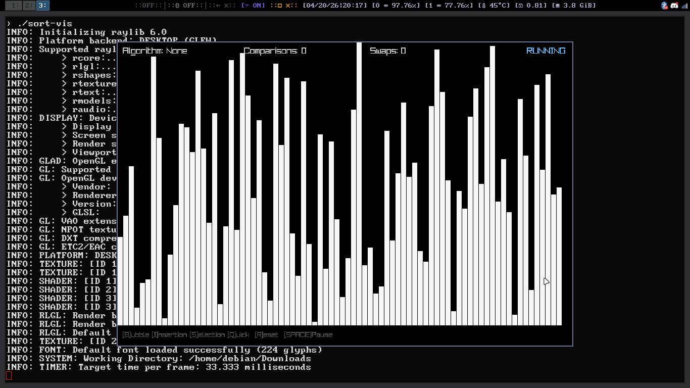

projects
low-level tools · data tools · visualizations
* work in progressn [may 2026 - now]
Real-time sorting algorithm visualizer written in C using the Raylib graphics library. Watch bubble sort, quicksort, and more come alive in a live rendering window.
⌥ view on GitHub
✓ finished · Aug 2024
Offline CLI dictionary containing 20,000+ words loaded from a text file. Look up definitions, print all words, or export results to a text file — no internet required. Runs on both Windows and Linux terminals.
✓ finished · Sept 2022
Database tool that pulls data from the CDC public API and displays population counts of COVID-19 cases ranging from 2019–2021.